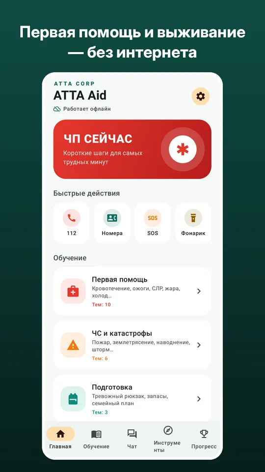
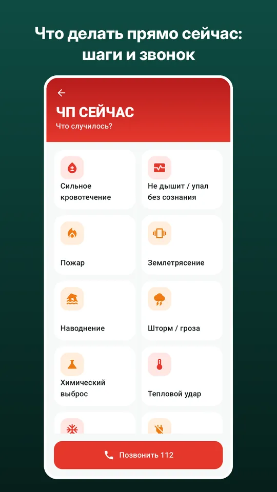
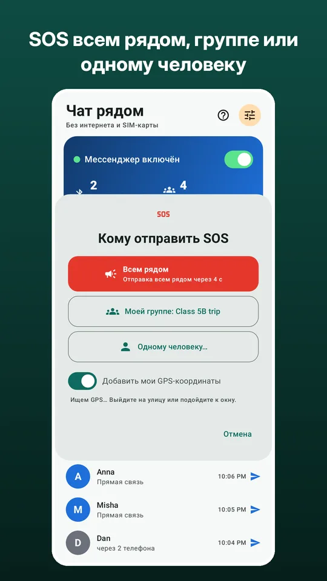
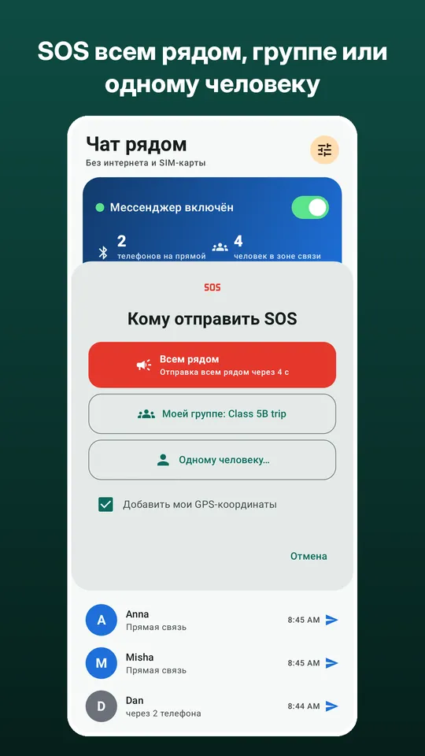

ATTA Aid
Переписывайтесь с людьми рядом и отправляйте SOS даже без интернета — от телефона к телефону.
Скоро в Google PlayСтать тестировщикомНачинается закрытое тестирование в Google Play. Вступите в группу тестировщиков, и мы пришлём ссылку на тест.
Что внутри
- Отметка группы, радар и офлайн-картаОтметки «Я в порядке», где сейчас ваша группа и карта, которая работает без сети. А ещё чек-лист тревожного рюкзака, компас и фонарик.
- Номера экстренных служб по странамНужные номера для вашей страны, звонок в одно касание.
- SOS людям рядомОтправьте SOS — при желании с координатами — и выберите получателя: все рядом, ваша группа или один человек.
- Чат рядом без интернетаТелефоны соединяются по Bluetooth и Wi-Fi и передают сообщения друг другу. Без SIM, без сети, без дополнительных устройств.
- Личные сообщения со сквозным шифрованиемПрочитать личное сообщение может только получатель. Код безопасности можно сверить при встрече.
- Зашифрованные группы через QRДля учителей и семей: создайте группу, остальные вступают, отсканировав QR-код.
- 6 языковEnglish, Русский, עברית, Español, Deutsch, Français.
- Без рекламы, платежей и аккаунтовБесплатно. Ничего не нужно покупать и регистрировать. Ваши данные остаются на телефоне.
Скриншоты




Важно
ATTA Aid — средство связи. Приложение не содержит медицинских или экстренных советов и не заменяет экстренные службы; сообщения доходят только до телефонов в зоне связи. В экстренной ситуации сначала позвоните в местную службу спасения (например, 112, 911 или 100/101/102 в Израиле). Ссылки на официальные сайты открываются в браузере; ATTA Aid не связано с этими организациями и не одобрено ими.
Конфиденциальность и контакты
Политика конфиденциальности Удаление данных Связь: gamerazrabplay@gmail.com